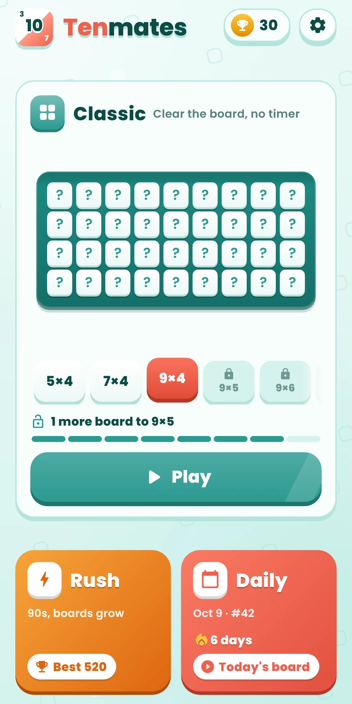
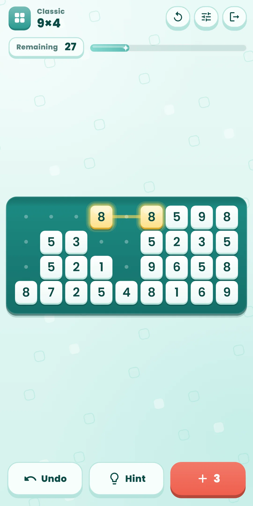
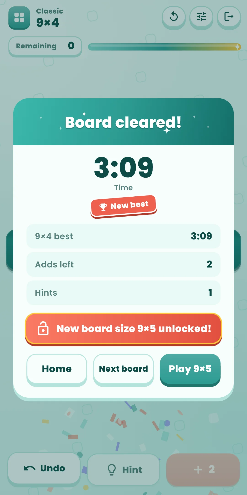
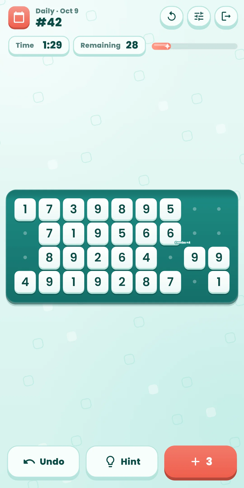
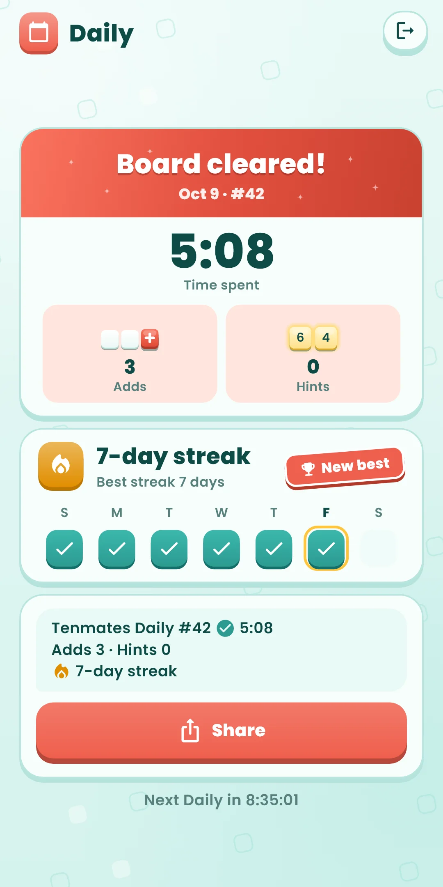
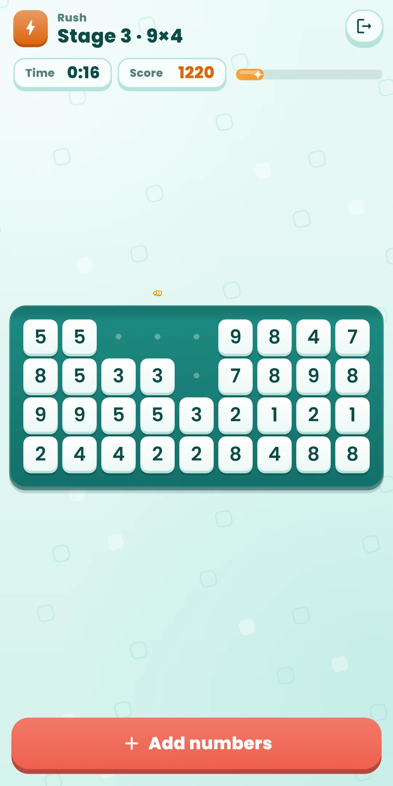
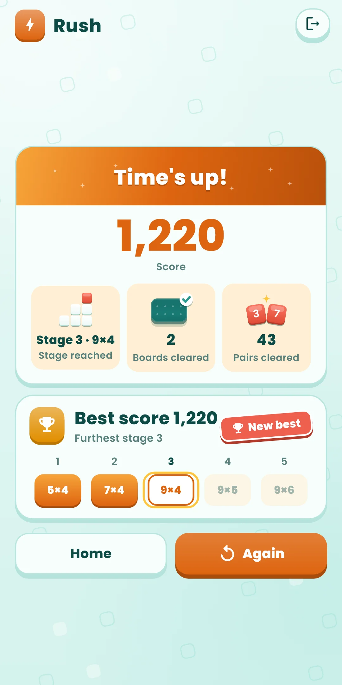
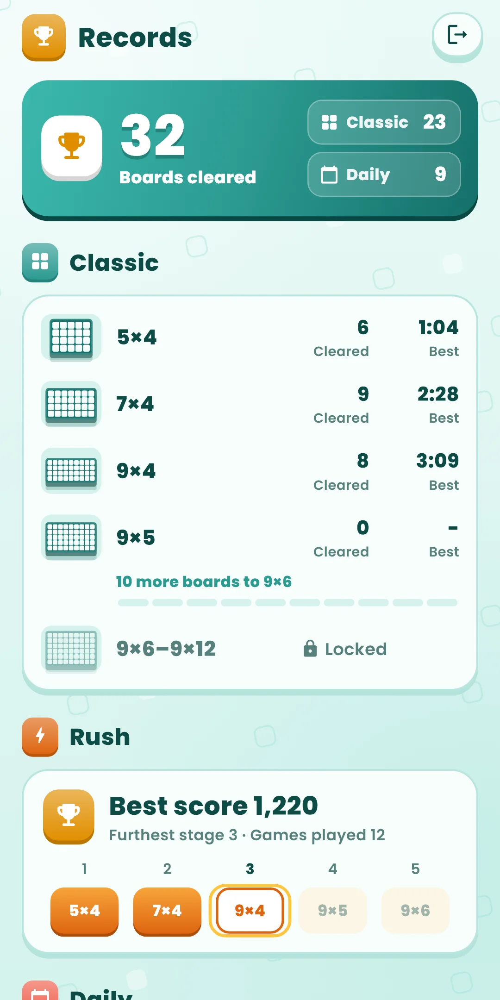

Tenmates
How to Play
How to Play








| App Name | Tenmates |
|---|---|
| Version | 1.0.0 |
| Developer | Willee Project |
| Platform | Android |
A number puzzle: find pairs of numbers that are the same or add up to 10, clear them, and empty the board.
Cleared cells stay as faint dots, so you can spot pairs with only cleared cells between them. When a row is empty, it disappears and the rows below move up.
If there are no numbers you can clear, the ＋ button at the bottom adds the remaining numbers, in reading order, to the end of the board. The number on the button is how many adds you have left: 3 per board in Classic and Daily, unlimited in Rush. Empty spots in an unfinished last row show as dots, like cleared cells (the next add fills them).
Buttons at the bottom (Classic and Daily):
| Button | What it does |
|---|---|
| Undo | Takes back your last move (a clear or an add), one at a time. Unlimited |
| Hint | Lights up a pair on a path that can still empty the board. Unlimited |
| ＋ Add | Adds the remaining numbers to the end of the board. The number is how many adds are left |
The Restart button (↻) on the right of the top bar:
| Choice | What happens |
|---|---|
| Start this board over | Puts the board back the way it started. In Classic, the time and hints start over too. In Daily, the day's time and hints keep counting |
| New board (Classic only) | Leaves this board and plays another board of the same size. A board you leave doesn't count as cleared |
If there are no numbers you can clear and you've used every add, the Out of adds panel appears. This try counts as a loss and can't be undone: Start over or pick a New board. In Daily, Give up takes the place of New board. Tap Hint before you get stuck: even a board that can no longer be emptied can be taken back to where it still can.
Tenmates Daily #12 ✅ 4:12 Adds 1 · Hints 0 🔥 5-day streak
✅ means you emptied the board (❌ if you gave up), followed by your time. The second line shows the adds and hints you used, and the third your streak (shown from two days on). #12 is the Daily number: launch day is #1 and it goes up by one each day, so the same number means the same board. The result screen shows the time until the next Daily, which opens at midnight on your device's clock.
Open them with the trophy button at the top right of the home screen. It shows how many boards you've cleared.
Open them with the gear at the top right of the home screen. During a game, the slider button on the right of the top bar changes sound, vibration, effects and large numbers right away.
| Item | What it does |
|---|---|
| Sound effects | Turns the sounds for selecting and clearing numbers on or off. Clearing pairs in a row raises the pitch a little each time |
| Vibration | Turns vibration for selecting and clearing numbers on or off |
| Reduce effects | Turns all effects down at once (a shorter clearing animation, without movement). While it's on, the effect switches below are greyed out and shown as off. It also follows your device's remove-animations setting |
| Effect switches | Under Reduce effects, turn each effect on or off: Shaking (the board's thump when a row clears, nearby cells bouncing, cells that don't pair shaking), Flashing (flashes, glow and sparkles, the blinking hint), Particles (shards and confetti), Pop-up text (combo, praise and other words on the board), Motion (two numbers gliding together, rows sweeping away; when off, numbers fade in place). If shaking or flashing bothers you, turn off just that effect |
| Large numbers | Draws the numbers on the board bigger. Other text follows your device's font size setting |
| How to play | Replays the first-run guide |
| Language | Follow the device language or pick one |
| Privacy options | Opens the ad consent window again. Shown only where consent is required (such as Europe) |
| About | Version, this guide, the privacy policy and open-source licenses |